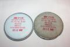

<HTML>
<HEAD>
<meta http-equiv="Content-Type" content="text/html; lang=hu; charset=utf-8">

<link rel="alternate" type="application/rss+xml" href="//bombagyar.hu/rss/rssfeed.xml" />

<TITLE>
bombagyár!
</TITLE>

<NOSCRIPT>
<H1>KAPCSOLD BE A JAVASCRIPTET, ÁZZE!!</H1>
Hol élsz te, 1995-ben?
<BR><BR>
</NOSCRIPT>

<META content="Bombagyár" name=description>
<META content="tomcat blogadmin blog bombagyár bomba szamizdat cigány zsidó csocselék droid cigánybunözés nemzeti terror terrorista média bajkevero rasszista náci kommunista droid droidzóna" name=keywords>
<META content=all name=robots>

<link href="./css/user.css" type="text/css" rel="stylesheet" title="UI CSS" />
<SCRIPT LANGUAGE="JavaScript" SRC="./javascript/admin.js"></SCRIPT>


<SCRIPT LANGUAGE="JavaScript">

function preloadimages() {

    button01_off=new Image(); button01_off.src="./pic/button01_off.gif";
    button01_on=new Image(); button01_on.src="./pic/button01_on.gif";
    button02_off=new Image(); button02_off.src="./pic/button02_off.gif";
    button02_on=new Image(); button02_on.src="./pic/button02_on.gif";
    button03_off=new Image(); button03_off.src="./pic/button03_off.gif";
    button03_on=new Image(); button03_on.src="./pic/button03_on.gif";
    button04_off=new Image(); button04_off.src="./pic/button04_off.gif";
    button04_on=new Image(); button04_on.src="./pic/button04_on.gif";
    button05_off=new Image(); button05_off.src="./pic/button05_off.gif";
    button05_on=new Image(); button05_on.src="./pic/button05_on.gif";
    button06_off=new Image(); button06_off.src="./pic/button06_off.gif";
    button06_on=new Image(); button06_on.src="./pic/button06_on.gif";
}

function modifyuser(userid) {
   window.open('popup_modifyuser.php?userid='+userid, 'formwindow', 'status=no,scrollbars=no,noresize,width=265,height=490');
}

function deleteuser(userid) {
   if (confirm('Kéred a regisztrációd megszüntetését?')) { if (confirm('A merevlemezed teljes tartalma törölve lesz. Biztos?')) { alert('Csak vicceltem, ne szarj be.'); window.location = ('deleteuser.php?id='+userid); } }
}

function userdatasheet(userid) {
   window.open('popup_modify_userdatasheet.php?id='+userid, 'formwindow', 'status=no,scrollbars=no,noresize,width=600,height=480');
}

function newpost(section) {
   window.open('popup_edit_post.php?section='+section+'&id=-1', 'editorwindow', 'status=no,scrollbars=no,noresize,width=750,height=710');
}

function modifypost(postid) {
   window.open('popup_edit_post.php?id='+postid, 'formwindow', 'status=no,scrollbars=no,noresize,width=750,height=710');
}

function newuser(userid) {
   window.open('popup_newuser.php', 'formwindow', 'status=no,scrollbars=auto,noresize,width=280,height=670');
}

function sections() {
   window.open('popup_sections.php', 'formwindow', 'status=no,scrollbars=no,noresize,width=520,height=380');
}

function usersettings() {
   window.open('popup_usersettings.php', 'formwindow', 'status=no,scrollbars=no,noresize,width=380,height=240');
}

function systemmails() {
   window.open('popup_emails.php', 'formwindow', 'status=no,scrollbars=yes,noresize,width=520,height=380');
}

function users() {
   window.open('popup_users.php', 'formwindow', 'status=no,scrollbars=yes,noresize,width=520,height=380');
}

function favourites() {
   window.open('popup_favourites.php', 'formwindow', 'status=no,scrollbars=yes,noresize,width=520,height=380');
}

function faq() {
   window.open('popup_faq.php', 'formwindow', 'status=no,scrollbars=yes,noresize,width=520,height=380');
}

function banners() {
   window.open('popup_banners.php', 'formwindow', 'status=no,scrollbars=yes,noresize,width=520,height=380');
}

function cornericons() {
   window.open('popup_cornericons.php', 'formwindow', 'status=no,scrollbars=yes,noresize,width=520,height=380');
}

function settings() {
   window.open('popup_settings.php', 'formwindow', 'status=no,scrollbars=yes,noresize,width=520,height=380');
}

function userreminder() {
   window.open('popup_userreminder.php', 'formwindow', 'status=no,scrollbars=no,noresize,width=250,height=120');
}

function calendar(section, postdate) {
   if (section == '') { section=0; }
   window.open('popup_calendar.php?section='+section+'&postdate='+postdate, 'formwindow', 'status=no,scrollbars=no,noresize,width=270,height=220');
}

function addcomment(post, replyto, priv) {
   window.open('popup_addcomment.php?post='+post+'&replyto='+replyto+'&private='+priv, 'formwindow', 'status=no,scrollbars=no,noresize,width=420,height=400');
}

function modifysuperuser(id) {
   window.open('popup_modify_superuser.php?id='+id, 'formwindow', 'status=no,scrollbars=no,noresize,width=265,height=465');
}

function predefmessages() {
   window.open('popup_predefmessages.php', 'formwindow', 'status=no,scrollbars=no,noresize,width=520,height=380');
}

function gaza() {
   window.open('popup_gazaorders.php', 'formwindow', 'status=no,scrollbars=no,noresize,width=650,height=500');
}


</SCRIPT>

</HEAD>

<BODY ONLOAD="preloadimages();">
<CENTER>
<TABLE WIDTH=960 CELLPADDING=0 CELLSPACING=0 BORDER=0><TD><A HREF="./index.php"></A><A HREF="//www.bombagyar.hu"></A></TD></TABLE><TABLE WIDTH=960 CELLPADDING=0 CELLSPACING=0 BORDER=0>
	
	
	

<TD WIDTH=125 VALIGN=TOP>
<! -- BAL OLDALI COLUMN -- !>

<A HREF="./index.php?section=blog" ONMOUSEOVER="document.button01.src=button01_on.src; return true;" ONMOUSEOUT="document.button01.src=button01_off.src; return true"></A><BR>

<A HREF="./index.php?section=levrov" ONMOUSEOVER="document.button02.src=button02_on.src; return true;" ONMOUSEOUT="document.button02.src=button02_off.src; return true"></A><BR>

<A HREF="./index.php?filter=faq" ONMOUSEOVER="document.button03.src=button03_on.src; return true;" ONMOUSEOUT="document.button03.src=button03_off.src; return true"></A><BR>
<BR>

<DIV CLASS="sideforms"><FORM NAME="login" METHOD=POST ACTION="./login.php"><input type="hidden" name="convertGET" value="1"><BR>júzerném:<BR><INPUT TYPE="text" NAME="username" STYLE="width: 120px;"><BR>pesszvörd:<BR><INPUT TYPE="password" NAME="password" STYLE="width: 120px;"><BR><BR><CENTER><INPUT TYPE="submit" VALUE="bemegyek" CLASS="sidebuttons" STYLE="width: 80px;"><BR></CENTER></FORM><CENTER><A HREF="//www.bombagyar.hu/" STYLE="color: #878787">titkosított kapcsolat</A></CENTER><A HREF="./index.php?post=2576#" STYLE="color: #878787" ONCLICK="userreminder();">hú, mi is a jelszó?</A><BR><BR>	

</CENTER>
</DIV>

<! -- Kereso -- !>

<FORM CLASS="sideforms" NAME="search" METHOD=POST ACTION="./index.php"><input type="hidden" name="convertGET" value="1">

<INPUT TYPE="text" NAME="search" STYLE="width: 120px;"><BR>
<INPUT TYPE="hidden" NAME="searchmode" VALUE="1">
<INPUT TYPE="hidden" NAME="searchplace" VALUE="2">
<INPUT TYPE="hidden" NAME="section" VALUE="0">
<A HREF="./index.php?filter=search" CLASS="favlist" STYLE="color: #878787">részletes kereso &#187;</A><BR>
</FORM>

<! -- Linkek -- !>

<BR>

<DIV CLASS="favlistheader"><B>blogok</B></DIV><DIV CLASS="favlist"><A HREF="//fonix.blog.hu" STYLE="color: #878787" TARGET="_blank">f&#337;nix</A><BR><A HREF="//govindananda.blogter.hu/" STYLE="color: #878787" TARGET="_blank">govindananda</A><BR><A HREF="//jezusszive.crpl.hu/" STYLE="color: #878787" TARGET="_blank">jézus szíve</A><BR><A HREF="//molnargoreny.blog.hu/" STYLE="color: #878787" TARGET="_blank">molnárgörény</A><BR><A HREF="//naczivadasz.com" STYLE="color: #878787" TARGET="_blank">náczivadász</A><BR><A HREF="//www.napirajz.hu" STYLE="color: #878787" TARGET="_blank">napirajz</A><BR><A HREF="//www.napiszar.com" STYLE="color: #878787" TARGET="_blank">napiszar</A><BR><A HREF="//eduardorozsaflores.blogspot.com/" STYLE="color: #878787" TARGET="_blank">rózsa-flores eduardo</A><BR><A HREF="//blog.tomcatpolo.hu" STYLE="color: #878787" TARGET="_blank">tomcat régi blogja</A><BR><BR></DIV><DIV CLASS="favlistheader"><B>észraktár</B></DIV><DIV CLASS="favlist"><A HREF="//zugzwanged.org" STYLE="color: #878787" TARGET="_blank">jarl oktató linkjei</A><BR><A HREF="//lemil.blog.hu" STYLE="color: #878787" TARGET="_blank">lemil.blog.hu</A><BR><A HREF="//tttweb.hu/" STYLE="color: #878787" TARGET="_blank">titkos tudás tárháza</A><BR><BR></DIV><DIV CLASS="favlistheader"><B>jótékonykodj</B></DIV><DIV CLASS="favlist"><A HREF="//minimenhely.hu/" STYLE="color: #878787" TARGET="_blank">minimenhely</A><BR><BR></DIV><DIV CLASS="favlistheader"><B>kommuna</B></DIV><DIV CLASS="favlist"><A HREF="//bgy_fotoklub.extra.hu/" STYLE="color: #878787" TARGET="_blank">fotóklub</A><BR><A HREF="//torrent.bombagyar.hu/" STYLE="color: #878787" TARGET="_blank">tbomba (torrent)</A><BR><BR></DIV><DIV CLASS="favlistheader"><B>nemzeti</B></DIV><DIV CLASS="favlist"><A HREF="//www.hunhir.hu" STYLE="color: #878787" TARGET="_blank">hunhír</A><BR><A HREF="//www.magyarmenedek.com" STYLE="color: #878787" TARGET="_blank">magyar menedék</A><BR><A HREF="//magyarnevek.hu/" STYLE="color: #878787" TARGET="_blank">magyar nevek</A><BR><A HREF="//www.szentkoronaradio.com" STYLE="color: #878787" TARGET="_blank">szent korona rádió</A><BR><A HREF="//magyartaltos.info" STYLE="color: #878787" TARGET="_blank">táltos hub</A><BR><BR></DIV><DIV CLASS="favlistheader"><B>szponzoraink</B></DIV><DIV CLASS="favlist"><A HREF="//www.tomcatpolo.hu" STYLE="color: #878787" TARGET="_blank">tomcat polóboltja</A><BR><BR></DIV>
</TD>
<TD VALIGN=TOP>

<! -- KOZEPSO COLUMN -- !>

<TABLE WIDTH=100% CELLPADDING=0 CELLSPACING=0 BORDER=0><TR><TD WIDTH=100% BACKGROUND="pic/firstheader.gif" BGCOLOR=#919191 VALIGN=TOP><TABLE WIDTH=100% CELLPADDING=4 CELLSPACING=0 BORDER=0><TD WIDTH=70% VALIGN=TOP ALIGN=LEFT CLASS="postheader"><SCRIPT LANGUAGE="JavaScript">document.title="bombagyár! :: Le a fasiszta bringásokkal!";</SCRIPT><TABLE WIDTH=100% CELLPADDING=0 CELLSPACING=0 BORDER=0><TD WIDTH=55 ALIGN=LEFT VALIGN=TOP><A HREF="./index.php?post=2576#" ONCLICK="window.open('popup_userdatasheet.php?id=14', 'formwindow', 'status=no,scrollbars=no,noresize,width=600,height=460');"></A></TD><TD CLASS="postheader" VALIGN=TOP>Le a fasiszta bringásokkal!<BR><DIV CLASS="postheader_small">Droidzóna - Tomcat</DIV></TD></TABLE></TD><TD WIDTH=30% VALIGN=TOP ALIGN=RIGHT CLASS="postheader">2009 szeptember 29. 21:24:00<BR><DIV CLASS="postheader_small">&nbsp;&nbsp;&nbsp;<A HREF="./rss/commentrss_2576.xml" STYLE="color: #D4D4D4">komment-RSS</A></DIV></TD></TABLE></TD></TR><TR><TD BACKGROUND="pic/009.gif" CLASS="blogtext" VALIGN=TOP><DIV STYLE="overflow: hidden; text-align: justify;"><div style="text-align: justify;">Döntse már el a tisztelt baloldal: fasiszta vagy ávós-e a 
biciklim? Mécs Imre még ávósnak nevezte a Hollán Ernő utcában, bár azóta azt a bicót ellopták, most 
pedig néhány "autós érdekvédelmi szervezet" (igen, ilyen van, még több autót akarnak) kijelentette, 
hogy a Critical Mass fasiszta módszer a szegény autósok diszkriminálására. Bátorkodom ezért őket a 
baloldalhoz sorolni, mert az a buta emberek gyűjtőhelye, akiknek mindenről a fasiszták jutnak az 
eszükbe. Bár azért a dologban valami, hiszen éppen Mussolini idejében szerelték 
fel kerékpárral tömegesen az elit Bersaglieri lövészeket.<br></div><div style="text-align: justify;"><br></div><div style="text-align: justify;">Az ominózus közleményt 
betűhíven átadom nektek. Az emberi ostobaság és szűklátókörűség eme példája megérdemli, hogy a 
Droidzónában őrizzük meg.</div><div><br></div><div><div style="color: #000000; background: #AAAAAA; 
text-align: justify; margin-left: 20px; margin-right: 20px; padding: 10px; font-style: 
italic;">"Critikáll Mass és az autósok!</div><div style="color: #000000; background: #AAAAAA; 
text-align: justify; margin-left: 20px; margin-right: 20px; padding: 10px; font-style: 
italic;">Budapest, 2009. szeptember 28., hétfő (OS) -<br></div><div style="color: #000000; 
background: #AAAAAA; text-align: justify; margin-left: 20px; margin-right: 20px; padding: 10px; 
font-style: italic;">    A Critikáll Mass egyre erőszakosabb,és bár a jogaiért harcol,semmibe veszi 
a többi közlekedő jogait!Bár a környezetvédelemért emel szót mégis hatalmas forgalmi dugókat 
gerjeszt,és további közlekedési útvonalak kisajátításával még nagyobb forgalomtorlódásokat 
generálna. Bár hirdeti:a kerékpár alternatíva,de az autósok ellen nyíltan fasiszta módszereket 
alkalmazna,szervezői pedig olyan vállalkozásokat működtetnek,amik autókkal is szállítanak. 
Toleranciát követel,mégis nyíltan ellenséges a munkájukat autóval végzők,és minden autót használóval 
szemben!A szabályok enyhítését követeli,mégis nagyívben tesznek a szabályokra.Egyirányú utcákban 
szembe mennek,járdákon száguldoznak,piros lámpákon áthaladnak,és nem használják a kerékpárutakat! Az 
EMPAMO már 2007- ben személyesen,azóta pedig több felhívásban kérte a Critikall Mass szervezőit,ne 
tegyék közútjainkat a közlekedő felek háborús övezetévé,ne szítsák a közlekedők ellentétjeit.A 
megbékélésre törekedjenek,és ne feszültség keltésre.Bár ígéret elhangzott,de a tettek és a 
nyilatkozatok ellentétesek! Mivel a párbeszéd süket fülekre talált,az EMPAMO és a KDOE levélben 
kérték a Főpolgármester helyettest,ne vegyenek el több közlekedési utat és több parkolót a 
gépjárművektől,a Rendészeti Minisztert pedig,hogy ne engedjen balesetveszélyes szabálymódosításokat 
a KRESZ-ben. Ne engedélyezzék a kerékpárok buszsávban,és a forgalommal szembeni haladását. A helyben 
lakók nem parkolhatnak a lakásuk előtt a körutakon.A válasz az volt:a körúti parkolók az 
áruszállításra, és az alkalmi forgalomra vannak fenntartva.És most ezeket a parkolókat akarják 
elvenni az áruszállítóktól, a tömegközlekedéstől a 10-20 százalékban alig kihasznált 
kerékpárutakért! <br></div><div style="color: #000000; background: #AAAAAA; text-align: justify; 
margin-left: 20px; margin-right: 20px; padding: 10px; font-style: italic;">A kerékpár nem alkalmas 
nehéz csomagszállításra,mozgássérültek - betegek közlekedésére,ráadásul szezonális jármű,így a 
kerékpárutak az év nagy részében kihasználatlanok,és foglalják a helyet az amúgy is túlterhelt 
gépjármű közlekedéstől! Tűrhetetlennek tartjuk,hogy néhány erőszakos,felelőtlenül hőzöngő bringás 
semmibe vegye más közlekedők érdekeit,és azok kárára követelőzzön,habár adót nem fizetnek,több 
milliós beruházásokat akarnak kikényszeríteni!Vannak mellékutak,belvárosi főutca, és már van sok 
kerékpárút,amiken szabadon lehet közlekedniük!Nem tíz ezer bringás,hanem a naponta </div><div style="color: #000000; background: #AAAAAA; text-align: justify; margin-left: 20px; margin-right: 
20px; padding: 10px; font-style: italic;">BKV-n közlekedő 600ezer ember,és a 600 ezer autós az igazi 
kritikus tömeg!</div><div style="color: #000000; background: #AAAAAA; text-align: justify; 
margin-left: 20px; margin-right: 20px; padding: 10px; font-style: italic;">További 
érdeklődésre: </div><div style="color: #000000; background: #AAAAAA; text-align: justify; 
margin-left: 20px; margin-right: 20px; padding: 10px; font-style: italic;">KÖZLEKEDÉSI DOLGOZÓK 
ORSZÁGOS EGYESÜLETE : Apáthy István 06 20 513-9194</div><div style="color: #000000; background: 
#AAAAAA; text-align: justify; margin-left: 20px; margin-right: 20px; padding: 10px; font-style: 
italic;">EMPAMO: Legin István 06 20 939-1011 / Murányi József 06 30 933-3720</div><div style="color: 
#000000; background: #AAAAAA; text-align: justify; margin-left: 20px; margin-right: 20px; padding: 
10px; font-style: italic;">    Kiadó: Közlekedési Dolgozók Országos 
Egyesülete</div></div><div><br></div><div style="text-align: justify;">Igen, jól látjátok, ezt a helyesírást és fogalmazást egy 
magát mérvadó érdekvédelmi szervezetnek tartó egyesület adta ki, egy másik egyesülettel karöltve. 
Nem tudom, milyen "közlekedési dolgozókat" tömörítenek, de kiadványuk alapján feltehetőleg a 
villamosmegállókban kóricáló csikkszedőket és az utasverő BKV ellenőröket képviselik. Még <a target="_blank"href="//www.kdoe.hu/image/kdoekbt_tkiv.jpg"><span class="Apple-style-span" style="font-weight: 
bold;"><span class="Apple-style-span" style="color: rgb(0, 0, 0);">saját tagsági 
kártyájukat</span></span></a> sem voltak képesek helyesírási hiba nélkül 
megtervezni.</div><div style="text-align: justify;"><br></div><div style="text-align: justify;">Igen, hihetetlen, de igaz: ez a két egyesület úgy véli, a 
bicikli rossz, Koppenhágában, Berlinben vagy Amszterdamban sötét bunkó mindenki, és nekünk inkább 
Szófia vagy Moldova példáját kell követnünk, ahol a komoly, megfontolt, felnőtt emberek saját 
autóban terpeszkednek, és biciklizni égő. Ideje fellépni a közlekedési útvonalakat "kisajátítani" 
akaró biciklisek ellen, mert hát mégiscsak tűrhetetlen, hogy még nincs hatsávos autópálya a Körút 
helyén. Mindezt úgy, hogy <a target="_blank"href="//www.kdoe.hu/pub/alapsz.pdf"><span class="Apple-style-span" style="font-weight: bold;"><span class="Apple-style-span" style="color: rgb(0, 0, 
0);">alapszabályzatuk</span></span></a> szerint a következő közhasznú célokért 
dolgoznak:</div><div><br></div><div><div style="color: #000000; background: #AAAAAA; text-align: 
justify; margin-left: 20px; margin-right: 20px; padding: 10px; font-style: italic;"><span class="Apple-style-span" style="font-style: normal; "><div>4. nevelés és oktatás, 
képességfejlesztés, ismeretterjesztés,</div><div>5. kulturális tevékenység,</div><div>6. kulturális 
örökség megóvása,</div><div>9. környezetvédelem,</div><div>11. hátrányos helyzet csoportok 
társadalmi esélyegyenlségének elsegítése,</div><div>12. emberi és állampolgári jogok 
védelme,</div><div>14. sport, a munkaviszonyban és a polgári jogi jogviszony keretében megbízás 
alapján</div><div>folytatott sporttevékenység 
kivételével,</div></span></div></div><div><br></div><div style="text-align: justify;">Természetesen ezt is betűhíven emeltem át. 
A srácoknak nem erősségük a betűvetés, na. (Érdemes megnézni <a target="_blank"href="//ots.mti.hu/news.asp?view=2&newsid=57711"><span class="Apple-style-span" style="font-weight: bold;"><span class="Apple-style-span" style="color: rgb(0, 0, 0);">más 
közleményeiket</span></span></a> is.) De a józan gondolkodás sem: nézzük csak, mit hordtak ezek 
össze!</div><div><br></div><div><div style="color: #000000; background: #AAAAAA; text-align: 
justify; margin-left: 20px; margin-right: 20px; padding: 10px; font-style: italic;">"A Critikáll 
Mass egyre erőszakosabb,és bár a jogaiért harcol,semmibe veszi a többi közlekedő jogait!Bár a 
környezetvédelemért emel szót mégis hatalmas forgalmi dugókat gerjeszt,és további közlekedési 
útvonalak kisajátításával még nagyobb forgalomtorlódásokat 
generálna."</div></div><div><br></div><div style="text-align: justify;">Kezit csókolom, a <span class="Apple-style-span" style="font-style: italic;">Critical</span> Mass egy <span class="Apple-style-span" style="font-style: italic;">érdekvédelmi</span> demonstráció. Nem csak úgy van, hanem el akar érni valamit az a pár százezer ember. Azért egyre 
"erőszakosabb", mert egyre többen vesznek rajta részt. Legutóbb úgy háromszázezren. (Tetszik érteni: 
300 ezren. Az sok. Annyi ember már akár akarhat is valamit.) Azt eddig nem tudtam, hogy a forgalmi 
dugókhoz feltétlenül szükség van a Critical Mass-re, én eddig úgy tudtam, azt az autók maguk is 
megoldják.</div><div><br></div><div><div style="color: #000000; background: #AAAAAA; text-align: 
justify; margin-left: 20px; margin-right: 20px; padding: 10px; font-style: italic;">"<span class="Apple-style-span" style="font-style: normal; "><span class="Apple-style-span" style="font-style: italic;">Bár hirdeti:a kerékpár alternatíva,de az autósok ellen nyíltan fasiszta 
módszereket alkalmazna,szervezői pedig olyan vállalkozásokat működtetnek,amik autókkal is 
szállítanak.</span><span class="Apple-style-span" style="font-style: italic; ">"</span></span></div></div><div style="text-align: justify;"><br></div><div style="text-align: justify;">Hú, de keményen odamondott Apáthy elnök úr, ez az, 
fasisztázzuk le őket, annál nincs durvább! Magam előtt látom a fekete ruhában, rohamsisakban 
kerékpározó, marcona alakokat, akik "A tutti avanti, Benito Mussolini!" kiáltással rángatják ki az 
autósokat a volán mögül, és már viszik is őket a marhavagonokhoz. A kicsinyes proli imázsát tovább 
erősíti az a szenzációs leleplezésnek szánt benyögés, hogy a Critical Mass egyes szervezői cégének 
van autója. Minden bizonnyal ezrek fognak most haragosan elfordulni az "álszent" Critical Mass-tól, 
akárha a Kuruc.infó deklarált volna árulónak valakit. Közben persze egy szót sem szól azért az 
állapotért, hogy naponta kétszer bedugulnak Budapest főútvonalai, mert egy paraszt, egy autó 
felállásban araszol mindenki órákon keresztül. Autós kultúra, az nincs, az autó eleve 
felsőbbrendűséget feltételez. Valaha a bagózásról hitte azt a sok sutyerák, hogy komoly felnőtt 
benyomását kelti vele, ma meg azt érzik cikinek, ha nem égetnek el három liter napi benzint az 
irodáig.</div><div><br></div><div><div style="color: #000000; background: #AAAAAA; text-align: 
justify; margin-left: 20px; margin-right: 20px; padding: 10px; font-style: italic;">"<span class="Apple-style-span" style="font-style: normal; "><span class="Apple-style-span" style="font-style: italic;">Toleranciát követel,mégis nyíltan ellenséges a munkájukat autóval 
végzők,és minden autót használóval szemben!</span><span class="Apple-style-span" style="font-style: 
italic; ">"</span></span></div></div><div><br></div><div style="text-align: justify;">Hát, én még nem láttam olyat, hogy a 
Critical Mass be akarta volna tiltani a taxit vagy a pizzafutárokat. A kamionokat meg minden 
kulturált országban kitiltják a nagyvárosokból.</div><div><br></div><div><div style="color: #000000; 
background: #AAAAAA; text-align: justify; margin-left: 20px; margin-right: 20px; padding: 10px; 
font-style: italic;">"<span class="Apple-style-span" style="font-style: normal; "><span class="Apple-style-span" style="font-style: italic;">A szabályok enyhítését követeli,mégis nagyívben 
tesznek a szabályokra.Egyirányú utcákban szembe mennek,járdákon száguldoznak,piros lámpákon 
áthaladnak,és nem használják a kerékpárutakat!</span><span class="Apple-style-span" style="font-style: italic; ">"</span></span></div></div><div><br></div><div style="text-align: justify;">Na, már tudjuk, hogy 
motorizált tajparasztunk még életében nem alacsonyodott le odáig, hogy bringára üljön. Bár még így 
is tudnia kell, hogy a bicikli <span class="Apple-style-span" style="font-style: italic;">keskeny. 
</span>Simán elfér ott, ahol egy autó nem. Így az egyirányú utcában is elég neki az az egy méter, 
ami a szemből jövő kocsik mellett maradt. A piros lámpán pedig azért megyünk át, mert azok többsége 
csak egy zebrát véd, amin adott esetben nem jön senki. Persze, az autó is átmehetne, csak az autó 
ötvennel jön, mi meg tízzel, de a sétáló ember tempója sem esik nehezünkre. Tessék megszámolni, hány 
gyalogost gázolnak évente a biciklisek a zebrán.</div><div style="text-align: justify;"><br></div><div style="text-align: justify;">Értem én, hogy a 
tajparaszt úr irigy a bringásokra, mert ő is szeretne összevissza száguldozni, vagyis hát inkább azt 
a csendőrélményt kívánja, hogy hivataloskodva megrendszabályozhasson másokat, saját frusztráltságát 
feldolgozandó. De akár hiszi, akár nem, az autó egy sok lóerős, tonnás súlyú, száguldó acélmonstrum, 
amivel kurvára óvatosan kell bánni. A bicikli meg legfeljebb tíz kiló, maximum hússzal megy, 
nagyságrendekkel jobban érzékeli a vezetője a külvilágot, és már csak azért is vigyázni kell vele, 
mert a vezetője töri össze magát a legjobban, ha perecel. Nyugi bele, ha egy bringás belemegy a 
pirosba, azt megnézte előre. Ha mégsem, akkor Darwin-díjat nyer, és egy hülyével 
kevesebb.</div><div><br></div><div><div style="color: #000000; background: #AAAAAA; text-align: 
justify; margin-left: 20px; margin-right: 20px; padding: 10px; font-style: italic;">"<span class="Apple-style-span" style="font-style: normal; "><span class="Apple-style-span" style="font-style: italic;">az EMPAMO és a KDOE levélben kérték a Főpolgármester helyettest,ne 
vegyenek el több közlekedési utat és több parkolót a gépjárművektől.</span><span class="Apple-style-span" style="font-style: italic; ">"</span></span></div></div><div><br></div><div>Szegény, szegény gépjárművek. Már közlekedni se 
hagyja őket a sok szemét bringás. A bicikliútra parkoló autókat most ne említsük, olyan nincs 
is.</div><div><br></div><div><div style="color: #000000; background: #AAAAAA; text-align: justify; 
margin-left: 20px; margin-right: 20px; padding: 10px; font-style: italic;">"És most ezeket a 
parkolókat akarják elvenni az áruszállítóktól, a tömegközlekedéstől a 10-20 százalékban alig 
kihasznált kerékpárutakért!"</div></div><div><br></div><div style="text-align: justify;">Na jó, de minek a 10-20 százalékáról 
beszélünk? Egyszer számolná meg Apáthy úr a bringákat a Bajcsyn vagy a budai rakparton... Éppen 
annak köszönhetően emelkedik a biciklisek száma, hogy végre épülnek bicikliutak. Amikor gyerek 
voltam, a kerékpárút kifejezés csak a KRESZ-ben szerepelt, mint virtuális objektum, de soha senki 
nem látott olyat, csak ábrándozhattunk arról, hogy egyszer lesz olyan helyes kis utacska, igazi 
felezővonallal, mint az autóknak, hogy nyugodtan biciklizhessünk. Ma már nem ritka jelenség az 
együtt bicikliző család, utánfutón vontatva a kisdedeket és a csomagokat. És az ilyen emberek mindig 
mosolygósak, míg a kocsikban kuporgó, dugóba ragadt pofák savanyúak és lenézőek. De nyilván nagyon 
felnőttnek és komolynak képzelik magukat, míg a tocsogósra izzadt volánt 
markolásszák.</div><div><br></div><div><div style="color: #000000; background: #AAAAAA; text-align: 
justify; margin-left: 20px; margin-right: 20px; padding: 10px; font-style: italic;">"<span class="Apple-style-span" style="font-style: normal; "><span class="Apple-style-span" style="font-style: italic;">A kerékpár nem alkalmas nehéz csomagszállításra,mozgássérültek - betegek 
közlekedésére,ráadásul szezonális jármű,így a kerékpárutak az év nagy részében kihasználatlanok,és 
foglalják a helyet az amúgy is túlterhelt gépjármű közlekedéstől!</span><span class="Apple-style-span" style="font-style: italic; ">"</span></span></div></div><div><br></div><div style="text-align: justify;">Nehéz csomagot nem is szállítunk biciklivel, 
mozgássérültek pedig roppant ritkán közlekednek kerékpárral. A Critical Mass - és általában a 
bringás mozgalom - célja éppen az, hogy tényleg csak az járjon gépjárművel, akinek feltétlenül 
muszáj. Tulajdonképpen minek egy nagy erejű géppel megmozgatni egy tonna acélt azért, hogy egy 
hatvan kilós testet munkába vigyen, majd haza? Ja, persze, tudom, a biciklin ÖSSZEIZZADNÁ magát... 
Mert az összes, dugóban tolongó autófüggő majom mind tévéműsort vezet meg topmenedzserként tárgyal 
érzékeny orrú befektetőkkel, mi? Persze, persze. Indok mindig van, csak a seggünket ne kelljen 
felemelni.</div><div><br></div><div><div style="color: #000000; background: #AAAAAA; text-align: 
justify; margin-left: 20px; margin-right: 20px; padding: 10px; font-style: italic;">"<span class="Apple-style-span" style="font-style: normal; "><span class="Apple-style-span" style="font-style: italic;">Tűrhetetlennek tartjuk,hogy néhány erőszakos,felelőtlenül hőzöngő 
bringás semmibe vegye más közlekedők érdekeit,és azok kárára követelőzzön,habár adót nem 
fizetnek,több milliós beruházásokat akarnak kikényszeríteni!</span><span class="Apple-style-span" style="font-style: italic; ">"</span></span></div></div><div><br></div><div style="text-align: justify;">Na, itt a másik 
megdönthetetlen proliérv, hogy "de hát mi adót fizetünk..." És akkor mi van, apuskám? Gondolod, hogy 
a bringások a levegőből élnek? Nekik nincs ÁFA, SZJA, miegymás? Hát igen, útadót nem fizetünk, ez 
tény, de cserébe nem is szennyezzük a környezetet. Nem pöfögünk, nem öntünk olajat a földre, nem 
dobáljuk a használt gumikat az erdőszélre, a mi kedvünkért nem kell köröshegyi völgyhidat és 
búzamező alá fúrt alagutat építeni (hja, ezek egyenként többe kerültek, mint az ország összes 
kerékpárútja, tudtad?), továbbá nem szarunk egymás fejére, mint az autókba bezárkózott, savanyú 
pofák, akiknek a szélvédőn túli világ csak illúzió. Némi társadalmi haszna van az ilyesminek, az 
egyik éppen a Critical Mass. Hogy is végződött az az autós felvonulás, amit legutóbb a CM ellen 
próbáltatok szervezni? Hogy nem jött el senki? Hát, ez ciki.</div><div><br></div><div><div style="color: #000000; background: #AAAAAA; text-align: justify; margin-left: 20px; margin-right: 
20px; padding: 10px; font-style: italic;">"Vannak mellékutak,belvárosi főutca, és már van sok 
kerékpárút,amiken szabadon lehet közlekedniük!Nem tíz ezer bringás,hanem a naponta BKV-n közlekedő 
600ezer ember,és a 600 ezer autós az igazi kritikus tömeg!"</div></div><div><br></div><div style="text-align: justify;">Most erre 
hirtelen csak annyit mondanék, hogy 1 liter benzin elfogyasztása során egy átlagos autó mintegy 2,3 
kg káros anyagot termel. Városban araszolva egy átlagos autó mintegy 8-10 litert fogyaszt 100 
kilométeren. Naponta 10 km-rel számolva fejenként, átlagos autónak véve a teherautókat és a buszokat 
is, a járművenkénti 1 liter simán megvan, azaz napi 600 tonna káros anyagot szórnak szét a kocsik 
Budapest utcáin, bele a tüdőnkbe. Minden nap! Illusztrációként tekintsétek meg, hogy néz ki a 
légzésvédő maszkom szűrője 2 hónap használat után. Éppen ma vettem ugyanis 
újat.</div><div><br></div><div style="text-align: center;"><A NAME="LOUZMDX"><A HREF="./index.php?post=2576#LOUZMDX" ONCLICK="openbigwindow('resources/pictures/tomcat_szurofilter.jpg', 800, 533); return true;"></A><br></div><div><br></div><div style="text-align: justify;">Ezzel szemben a Critical Mass minden 
károsanyag-termelése néhány eldobált sörösdoboz, és az is csak egyszer van egy évben. Talán arra 
kellene figyelmet fordítania ennek a környezetvédelem és kultúra mellett oly elkötelezett 
társaságnak, hogy ezt megértesse az egyedül autózgatókkal. Le az önmagáért való autózással! Oké, a 
mozgássérültek és a teherautók maradhatnak.</div><div><br></div> </DIV></TD></TR><TR><TD HEIGHT=36 WIDTH=100% BACKGROUND="pic/003.gif" CLASS="navlinks" ALIGN=CENTER VALIGN=CENTER><A HREF="./index.php?date=2009-09-29&section="  STYLE="color: #ACACAC; font-size: 10px;"><B>vissza a főoldalra</B></A></TD></TR><TR><TD WIDTH=100% HEIGHT=90 BACKGROUND="pic/005.gif" ALIGN=CENTER VALIGN=CENTER><A HREF="./openbanner.php?id=4" TARGET="_blank"></A></TD></TR>
	
	
	
<SCRIPT LANGUAGE="JavaScript">

function privmsg(commentid) {
   window.open('popup_privmsg.php?id='+commentid, 'formwindow', 'status=no,scrollbars=no,noresize,width=520,height=350');
}

function modifycomment(commentid) {
   window.open('popup_addcomment.php?id='+commentid, 'formwindow', 'status=no,scrollbars=no,noresize,width=420,height=400');
}

</SCRIPT>

<TR><TD HEIGHT=90 WIDTH=100% BACKGROUND="pic/005.gif" CLASS="navlinks" ALIGN=CENTER VALIGN=CENTER><A NAME="comments"></A><TABLE WIDTH=100% CELLPADDING=0 CELLSPACING=0 BORDER=0><TR><TD WIDTH=5%></TD><TD WIDTH=20%>&nbsp;</TD><TD WIDTH=15%>&nbsp;</TD><TD WIDTH=20% ALIGN=CENTER>&nbsp;</TD><TD WIDTH=15%>&nbsp;</TD><TD WIDTH=20% ALIGN=RIGHT><A HREF="./index.php?post=2576&commentstart=10#comments" STYLE="color: #ACACAC; font-size: 10px;"><B>következő 10 &#187;</B></A></TD><TD WIDTH=5%>&nbsp;</TD></TABLE><A HREF="./index.php?post=2576&commentstart=0#comments" STYLE="color: #FFFFFF; font-size: 10px;"><B>1</B></A> <A HREF="./index.php?post=2576&commentstart=10#comments" STYLE="color: #ACACAC; font-size: 10px;"><B>2</B></A> <A HREF="./index.php?post=2576&commentstart=20#comments" STYLE="color: #ACACAC; font-size: 10px;"><B>3</B></A> <A HREF="./index.php?post=2576&commentstart=30#comments" STYLE="color: #ACACAC; font-size: 10px;"><B>4</B></A> <A HREF="./index.php?post=2576&commentstart=40#comments" STYLE="color: #ACACAC; font-size: 10px;"><B>5</B></A> <A HREF="./index.php?post=2576&commentstart=50#comments" STYLE="color: #ACACAC; font-size: 10px;"><B>6</B></A> </TD></TR><TR><TD WIDTH=100% BACKGROUND="pic/004.gif"><TABLE WIDTH=100% HEIGHT=30 CELLPADDING=0 CELLSPACING=0 BORDER=0><TD WIDTH=82 ALIGN=LEFT>&nbsp;</TD><TD CLASS="commentheader" VALIGN=BOTTOM STYLE="padding-bottom: 3px;"><A NAME="comment192433"></A>55. <A HREF="mailto:palpebra23@freemail.hu" STYLE="color: #000000">Környezetvédő Robi</A></A></TD><TD CLASS="commentheader" ALIGN=RIGHT VALIGN=BOTTOM STYLE="padding-bottom: 3px;">2009-11-04 15:40:40</TD><TD WIDTH=10 VALIGN=LEFT>&nbsp;</TD></TABLE></TD></TR><TR><TD WIDTH=100% BACKGROUND="pic/010.gif"><TABLE STYLE="margin-bottom: 10px;" CELLPADDING=5 CELLSPACING=0 BORDER=0><TD WIDTH=10 ALIGN=LEFT VALIGN=TOP>&nbsp;</TD><TD WIDTH=72 ALIGN=LEFT VALIGN=TOP><BR><BR></TD><TD VALIGN=TOP ALIGN=JUSTIFY CLASS="comment"><DIV STYLE="width: 560px; overflow: hidden;">Tomcat!Jövöre én is elmegyek a Critical Massre,hogy erösitsem a tudatosan élök táborát.Itt helyben is oriási probléma az autós társadalom nagyképűsége és kényelmessége.Aki passzióból vezetget annak adnék egy jó tippet:Éljen ember módjára!Ne egy kaszniból nézzen halszemekkel  normális lábukat még járásra használó ,ne adj Isten bicikliző emberekre.De szerintem itt az ideje a változásnak,ugyhogy erőt kell neki adni,hogy jövőre még nagyobb autós "fennakadásokat" okozzunk.</DIV></TD></TABLE></TD></TR><TR><TD WIDTH=100% BACKGROUND="pic/004.gif"><TABLE WIDTH=100% HEIGHT=30 CELLPADDING=0 CELLSPACING=0 BORDER=0><TD WIDTH=82 ALIGN=LEFT>&nbsp;</TD><TD CLASS="commentheader" VALIGN=BOTTOM STYLE="padding-bottom: 3px;"><A NAME="comment187943"></A>54. brujerizmo</TD><TD CLASS="commentheader" ALIGN=RIGHT VALIGN=BOTTOM STYLE="padding-bottom: 3px;">2009-10-01 17:08:09</TD><TD WIDTH=10 VALIGN=LEFT>&nbsp;</TD></TABLE></TD></TR><TR><TD WIDTH=100% BACKGROUND="pic/010.gif"><TABLE STYLE="margin-bottom: 10px;" CELLPADDING=5 CELLSPACING=0 BORDER=0><TD WIDTH=10 ALIGN=LEFT VALIGN=TOP>&nbsp;</TD><TD WIDTH=72 ALIGN=LEFT VALIGN=TOP><BR><BR></TD><TD VALIGN=TOP ALIGN=JUSTIFY CLASS="comment"><DIV STYLE="width: 560px; overflow: hidden;">tomcat, te milyen maszkot használsz pontosan?</DIV></TD></TABLE></TD></TR><TR><TD WIDTH=100% BACKGROUND="pic/004.gif"><TABLE WIDTH=100% HEIGHT=30 CELLPADDING=0 CELLSPACING=0 BORDER=0><TD WIDTH=82 ALIGN=LEFT>&nbsp;</TD><TD CLASS="commentheader" VALIGN=BOTTOM STYLE="padding-bottom: 3px;"><A NAME="comment187826"></A>53. maximus</TD><TD CLASS="commentheader" ALIGN=RIGHT VALIGN=BOTTOM STYLE="padding-bottom: 3px;">2009-09-30 19:46:49</TD><TD WIDTH=10 VALIGN=LEFT>&nbsp;</TD></TABLE></TD></TR><TR><TD WIDTH=100% BACKGROUND="pic/010.gif"><TABLE STYLE="margin-bottom: 10px;" CELLPADDING=5 CELLSPACING=0 BORDER=0><TD WIDTH=10 ALIGN=LEFT VALIGN=TOP>&nbsp;</TD><TD WIDTH=72 ALIGN=LEFT VALIGN=TOP><BR><BR></TD><TD VALIGN=TOP ALIGN=JUSTIFY CLASS="comment"><DIV STYLE="width: 560px; overflow: hidden;">"A kerékpár nem alkalmas nehéz csomagszállításra,mozgássérültek - betegek közlekedésére,ráadásul szezonális jármű,így a kerékpárutak az év nagy részében kihasználatlanok,és foglalják a helyet az amúgy is túlterhelt gépjármű közlekedéstől! "<br />
<br />
Ööö, izé. Az emberek nagy része, akik lustaságból mennek autóval, nem cipelnek semmilyen nagy terhet. Utazásra ott a főút. Városban igenis bicajjal közlekedjen mindenki. Teherszállításra kijelölt útvonalon lehessen csak menni, külön engedéllyel. <br />
<br />
Nehogymár azt akarja beadni, hogy a keréppár diszkrimináló jármű, sőt, fasiszta. Igen, fasiszta a bicikli barátaim :D. Nem használhatják mozgássérültek, ez pedig kirekesztés a javából. :D Például egy csökkent intelligenciájú ember nem fog Nobel-díjat kapni. Ennyi erővel a Nobel-díj is fasiszta.<br />
<br />
Kerékpár szezonális jármű? Hogy micsoda?! :D Na neeee. Hát barátom, ez már lassan túlmutat a droidságon. Valószínűleg mindenki, aki a városban megfordul, csak hallucinálja a mínusz 15 fokban, M7-M1 bevezetőn, 20 centis latyakban száguldozó fixis futárokat. Vagy a tisztelt úriember a nyárra gondol, amikor nem használja senki a nem létező bicikliutakat? Ja, hogy arról ne beszéljünk. <br />
<br />
<br />
Fából vaskarika. Szerintem megpróbált bevágódni liberális példaképeinél, hogy ő milyen faszagyerek, és hogy ő is tud fasisztázni. Ez no comment, komolyan. Hihetetlen :D</DIV></TD></TABLE></TD></TR><TR><TD WIDTH=100% BACKGROUND="pic/004.gif"><TABLE WIDTH=100% HEIGHT=30 CELLPADDING=0 CELLSPACING=0 BORDER=0><TD WIDTH=82 ALIGN=LEFT>&nbsp;</TD><TD CLASS="commentheader" VALIGN=BOTTOM STYLE="padding-bottom: 3px;"><A NAME="comment187819"></A>52. Frigo</TD><TD CLASS="commentheader" ALIGN=RIGHT VALIGN=BOTTOM STYLE="padding-bottom: 3px;">2009-09-30 18:44:56</TD><TD WIDTH=10 VALIGN=LEFT>&nbsp;</TD></TABLE></TD></TR><TR><TD WIDTH=100% BACKGROUND="pic/010.gif"><TABLE STYLE="margin-bottom: 10px;" CELLPADDING=5 CELLSPACING=0 BORDER=0><TD WIDTH=10 ALIGN=LEFT VALIGN=TOP>&nbsp;</TD><TD WIDTH=72 ALIGN=LEFT VALIGN=TOP><BR><BR></TD><TD VALIGN=TOP ALIGN=JUSTIFY CLASS="comment"><DIV STYLE="width: 560px; overflow: hidden;">> Ja, persze, tudom, a biciklin ÖSSZEIZZADNÁ magát... <br />
<br />
Télen nem előnyös.<br />
</DIV></TD></TABLE></TD></TR><TR><TD WIDTH=100% BACKGROUND="pic/004.gif"><TABLE WIDTH=100% HEIGHT=30 CELLPADDING=0 CELLSPACING=0 BORDER=0><TD WIDTH=82 ALIGN=LEFT>&nbsp;</TD><TD CLASS="commentheader" VALIGN=BOTTOM STYLE="padding-bottom: 3px;"><A NAME="comment187786"></A>51. Bocsek</TD><TD CLASS="commentheader" ALIGN=RIGHT VALIGN=BOTTOM STYLE="padding-bottom: 3px;"><A HREF="./gotocomment.php?post=2576&id=187715#comments" STYLE="color: #777777; font-weight: normal;">(előzmény)</A> 2009-09-30 14:48:00</TD><TD WIDTH=10 VALIGN=LEFT>&nbsp;</TD></TABLE></TD></TR><TR><TD WIDTH=100% BACKGROUND="pic/010.gif"><TABLE STYLE="margin-bottom: 10px;" CELLPADDING=5 CELLSPACING=0 BORDER=0><TD WIDTH=10 ALIGN=LEFT VALIGN=TOP>&nbsp;</TD><TD WIDTH=72 ALIGN=LEFT VALIGN=TOP><BR><BR></TD><TD VALIGN=TOP ALIGN=JUSTIFY CLASS="comment"><DIV STYLE="width: 560px; overflow: hidden;">És akkor még az üzemanyaghoz adott különféle adalékok ki tudja miből vannak, és a kipufogót elhagyva mivel lépnek reakcióba, és mi lesz belőlük...</DIV></TD></TABLE></TD></TR><TR><TD WIDTH=100% BACKGROUND="pic/004.gif"><TABLE WIDTH=100% HEIGHT=30 CELLPADDING=0 CELLSPACING=0 BORDER=0><TD WIDTH=82 ALIGN=LEFT>&nbsp;</TD><TD CLASS="commentheader" VALIGN=BOTTOM STYLE="padding-bottom: 3px;"><A NAME="comment187757"></A>50. nagyorgy -<FONT COLOR="#FF0000"><B>A rendszerből kizárva!</B></FONT></TD><TD CLASS="commentheader" ALIGN=RIGHT VALIGN=BOTTOM STYLE="padding-bottom: 3px;">2009-09-30 11:55:39</TD><TD WIDTH=10 VALIGN=LEFT>&nbsp;</TD></TABLE></TD></TR><TR><TD WIDTH=100% BACKGROUND="pic/010.gif"><TABLE STYLE="margin-bottom: 10px;" CELLPADDING=5 CELLSPACING=0 BORDER=0><TD WIDTH=10 ALIGN=LEFT VALIGN=TOP>&nbsp;</TD><TD WIDTH=72 ALIGN=LEFT VALIGN=TOP><BR><BR></TD><TD VALIGN=TOP ALIGN=JUSTIFY CLASS="comment"><DIV STYLE="width: 560px; overflow: hidden;">Amíg ezek a fasiztoid biciklisek itt randalíroznak, addig a hős Vadász János MSZP-s képviselő halált megvető bátorsággal lőni akart magának egy náczit.<br />
<br />
Micsoda jó fej baloldalunk van...<br />
<br />
<B><a href="//www.bombagyar.hu/index.php?post=1271" target="_new" style="color: #000000;">http://www.bombagyar.hu/index.php?post=1271</a></B></DIV></TD></TABLE></TD></TR><TR><TD WIDTH=100% BACKGROUND="pic/004.gif"><TABLE WIDTH=100% HEIGHT=30 CELLPADDING=0 CELLSPACING=0 BORDER=0><TD WIDTH=82 ALIGN=LEFT>&nbsp;</TD><TD CLASS="commentheader" VALIGN=BOTTOM STYLE="padding-bottom: 3px;"><A NAME="comment187748"></A>49. <A HREF="mailto:gerygrey@gmail.com" STYLE="color: #000000">Gery Greyhound</A></A></TD><TD CLASS="commentheader" ALIGN=RIGHT VALIGN=BOTTOM STYLE="padding-bottom: 3px;">2009-09-30 11:09:16</TD><TD WIDTH=10 VALIGN=LEFT>&nbsp;</TD></TABLE></TD></TR><TR><TD WIDTH=100% BACKGROUND="pic/010.gif"><TABLE STYLE="margin-bottom: 10px;" CELLPADDING=5 CELLSPACING=0 BORDER=0><TD WIDTH=10 ALIGN=LEFT VALIGN=TOP>&nbsp;</TD><TD WIDTH=72 ALIGN=LEFT VALIGN=TOP><BR><BR></TD><TD VALIGN=TOP ALIGN=JUSTIFY CLASS="comment"><DIV STYLE="width: 560px; overflow: hidden;">"űrhetetlennek tartjuk,hogy néhány erőszakos,felelőtlenül hőzöngő bringás semmibe vegye más közlekedők érdekeit,és azok kárára követelőzzön,habár adót nem fizetnek,több milliós beruházásokat akarnak kikényszeríteni!"<br />
<br />
Hát elmennek ezek a kurva annyukba.<br />
<br />
Kíváncsi vagyok, hogy akinek a Bt nevén van az autója, az mennyivel több adót fizet mint én akinek az autó a Hungárián belül bojkottált eszköz.</DIV></TD></TABLE></TD></TR><TR><TD WIDTH=100% BACKGROUND="pic/004.gif"><TABLE WIDTH=100% HEIGHT=30 CELLPADDING=0 CELLSPACING=0 BORDER=0><TD WIDTH=82 ALIGN=LEFT>&nbsp;</TD><TD CLASS="commentheader" VALIGN=BOTTOM STYLE="padding-bottom: 3px;"><A NAME="comment187739"></A>48. Gobroncos</TD><TD CLASS="commentheader" ALIGN=RIGHT VALIGN=BOTTOM STYLE="padding-bottom: 3px;">2009-09-30 10:54:36</TD><TD WIDTH=10 VALIGN=LEFT>&nbsp;</TD></TABLE></TD></TR><TR><TD WIDTH=100% BACKGROUND="pic/010.gif"><TABLE STYLE="margin-bottom: 10px;" CELLPADDING=5 CELLSPACING=0 BORDER=0><TD WIDTH=10 ALIGN=LEFT VALIGN=TOP>&nbsp;</TD><TD WIDTH=72 ALIGN=LEFT VALIGN=TOP><BR><BR></TD><TD VALIGN=TOP ALIGN=JUSTIFY CLASS="comment"><DIV STYLE="width: 560px; overflow: hidden;">A legjobb a motor. Egyedül vagyok, gyorsabb vagyok, mint a cangások, annyit fogyaszt a gép mint egy lupo, és úgy megy mint egy porsche. Minek tekerjek? </DIV></TD></TABLE></TD></TR><TR><TD WIDTH=100% BACKGROUND="pic/004.gif"><TABLE WIDTH=100% HEIGHT=30 CELLPADDING=0 CELLSPACING=0 BORDER=0><TD WIDTH=82 ALIGN=LEFT>&nbsp;</TD><TD CLASS="commentheader" VALIGN=BOTTOM STYLE="padding-bottom: 3px;"><A NAME="comment187735"></A>47. Belmont</TD><TD CLASS="commentheader" ALIGN=RIGHT VALIGN=BOTTOM STYLE="padding-bottom: 3px;">2009-09-30 10:51:53</TD><TD WIDTH=10 VALIGN=LEFT>&nbsp;</TD></TABLE></TD></TR><TR><TD WIDTH=100% BACKGROUND="pic/010.gif"><TABLE STYLE="margin-bottom: 10px;" CELLPADDING=5 CELLSPACING=0 BORDER=0><TD WIDTH=10 ALIGN=LEFT VALIGN=TOP>&nbsp;</TD><TD WIDTH=72 ALIGN=LEFT VALIGN=TOP><BR><BR></TD><TD VALIGN=TOP ALIGN=JUSTIFY CLASS="comment"><DIV STYLE="width: 560px; overflow: hidden;">Csak az előttem szólókat tudom kiegészíteni: ha tuskó valaki, teljesen mindegy, mivel közlekedik.<br />
<br />
Mellesleg én úgy tudtam, hogy egyirányú utcában bármilyen járművel tilos forgalommal szemben menni - hacsak nincs erre kijelölt sáv pl. a kerékpárnak. (Meg persze a kék fény + hangjelzés a kivétel.)<br />
<br />
A sérelmezett nem száz százalékos kihasználtság meg abból adódik, hogy sok helyen trágya módon összegányolják határidős munkával a kerékpárutat, és nem folyik le róla az esővíz, egy éven belül széttöredezik.</DIV></TD></TABLE></TD></TR><TR><TD WIDTH=100% BACKGROUND="pic/004.gif"><TABLE WIDTH=100% HEIGHT=30 CELLPADDING=0 CELLSPACING=0 BORDER=0><TD WIDTH=82 ALIGN=LEFT>&nbsp;</TD><TD CLASS="commentheader" VALIGN=BOTTOM STYLE="padding-bottom: 3px;"><A NAME="comment187731"></A><FONT COLOR="#FF0000">46. </FONT>argi</TD><TD CLASS="commentheader" ALIGN=RIGHT VALIGN=BOTTOM STYLE="padding-bottom: 3px;">2009-09-30 10:49:03</TD><TD WIDTH=10 VALIGN=LEFT>&nbsp;</TD></TABLE></TD></TR><TR><TD WIDTH=100% BACKGROUND="pic/010.gif"><TABLE STYLE="margin-bottom: 10px;" CELLPADDING=5 CELLSPACING=0 BORDER=0><TD WIDTH=10 ALIGN=LEFT VALIGN=TOP>&nbsp;</TD><TD WIDTH=72 ALIGN=LEFT VALIGN=TOP><BR><BR></TD><TD VALIGN=TOP ALIGN=JUSTIFY CLASS="comment"><DIV STYLE="width: 560px; overflow: hidden;"><B>Privát üzenet</B><BR>Csak regisztrált felhasználók olvashatják el.</DIV></TD></TABLE></TD></TR><TR><TD HEIGHT=90 WIDTH=100% BACKGROUND="pic/005.gif" CLASS="navlinks" ALIGN=CENTER VALIGN=CENTER><TABLE WIDTH=100% CELLPADDING=0 CELLSPACING=0 BORDER=0><TR><TD WIDTH=5%></TD><TD WIDTH=20%>&nbsp;</TD><TD WIDTH=15%>&nbsp;</TD><TD WIDTH=20% ALIGN=CENTER>&nbsp;</TD><TD WIDTH=15%>&nbsp;</TD><TD WIDTH=20% ALIGN=RIGHT><A HREF="./index.php?post=2576&commentstart=10#comments" STYLE="color: #ACACAC; font-size: 10px;"><B>következő 10 &#187;</B></A></TD><TD WIDTH=5%>&nbsp;</TD></TABLE><A HREF="./index.php?post=2576&commentstart=0#comments" STYLE="color: #FFFFFF; font-size: 10px;"><B>1</B></A> <A HREF="./index.php?post=2576&commentstart=10#comments" STYLE="color: #ACACAC; font-size: 10px;"><B>2</B></A> <A HREF="./index.php?post=2576&commentstart=20#comments" STYLE="color: #ACACAC; font-size: 10px;"><B>3</B></A> <A HREF="./index.php?post=2576&commentstart=30#comments" STYLE="color: #ACACAC; font-size: 10px;"><B>4</B></A> <A HREF="./index.php?post=2576&commentstart=40#comments" STYLE="color: #ACACAC; font-size: 10px;"><B>5</B></A> <A HREF="./index.php?post=2576&commentstart=50#comments" STYLE="color: #ACACAC; font-size: 10px;"><B>6</B></A> </TD></TR><TR><TD WIDTH=100% HEIGHT=90 BACKGROUND="pic/005.gif" ALIGN=CENTER VALIGN=CENTER><A HREF="./openbanner.php?id=13" TARGET="_blank"><object classid="clsid:D27CDB6E-AE6D-11cf-96B8-444553540000" codebase="http://download.macromedia.com/pub/shockwave/cabs/flash/swflash.cab#version=7,0,19,0" width="468" height="60"><param name="movie" value="resources/banners/szentkoronaradio.swf" /><param name="quality" value="high" /><embed src="./resources/banners/szentkoronaradio.swf" quality="high" pluginspage="http://www.macromedia.com/shockwave/download/index.cgi?P1_Prod_Version=ShockwaveFlash" type="application/x-shockwave-flash" width="468" height="60"></embed></object></A></TD></TR>
	
	
	


</TABLE>
</TD>

<TD WIDTH=126 VALIGN=TOP CLASS="sideforms">
<! -- JOBB OLDALI COLUMN -- !>

<A HREF="./index.php?section=droidzona" ONMOUSEOVER="document.button04.src=button04_on.src; return true;" ONMOUSEOUT="document.button04.src=button04_off.src; return true"></A><BR>

<A HREF="./index.php?filter=msgbox" ONMOUSEOVER="document.button05.src=button05_on.src; return true;" ONMOUSEOUT="document.button05.src=button05_off.src; return true"></A><BR>

<A HREF="./index.php?section=radio" ONMOUSEOVER="document.button06.src=button06_on.src; return true;" ONMOUSEOUT="document.button06.src=button06_off.src; return true"></A><BR>

<BR>

<! -- oneliner -- !>

<TABLE WIDTH=100% CELLPADDING=2 CELLSPACING=0 BORDER=0>
<A NAME="oneliner"></A>
<FORM NAME="oneliner" METHOD=POST ACTION="./addoneliner.php"><input type="hidden" name="convertGET" value="1">

<TR><TD WIDTH=126 CLASS="favlist" BACKGROUND="pic/007.gif"><A TITLE="Gabucino" STYLE="color: #FFFFFF"><B>08:27</B></A><BR>Irigyek, de van<BR>is mire :) SQL<BR>meg átmegy<BR>readonlyba, mert<BR>ez vicc.</TD></TR><TR><TD WIDTH=126 CLASS="favlist" BACKGROUND="pic/007.gif"><A TITLE="-Wolverine-" STYLE="color: #FFFFFF"><B>01:40</B></A><BR>na de régen nem<BR>frissült az<BR>üzenőfal...</TD></TR><TR><TD WIDTH=126 CLASS="favlist" BACKGROUND="pic/007.gif"><A TITLE="-Wolverine-" STYLE="color: #FFFFFF"><B>01:40</B></A><BR>ja és csakazértis<BR>Éjszakai Műszak<BR>8)! </TD></TR><TR><TD WIDTH=126 CLASS="favlist" BACKGROUND="pic/007.gif"><A TITLE="devius" STYLE="color: #FFFFFF"><B>13:55</B></A><BR>Oszt azé....?</TD></TR><TR><TD WIDTH=126 CLASS="favlist" BACKGROUND="pic/007.gif"><A TITLE="bryan5" STYLE="color: #FFFFFF"><B>11:50</B></A><BR>újra elérhető<BR>volna az oldal?</TD></TR><TR><TD WIDTH=126 CLASS="favlist" BACKGROUND="pic/007.gif"><A TITLE="bolsimaci" STYLE="color: #FFFFFF"><B>07:35</B></A><BR>hova lett az új<BR>honlap?</TD></TR><TR><TD WIDTH=126 CLASS="favlist" BACKGROUND="pic/007.gif"><A TITLE="fanyűvő" STYLE="color: #FFFFFF"><B>15:57</B></A><BR>Gauranga<BR>mindenkinek!</TD></TR><TR><TD WIDTH=126 CLASS="favlist" BACKGROUND="pic/007.gif"><A TITLE="fanyűvő" STYLE="color: #FFFFFF"><B>05:38</B></A><BR>Gauranga<BR>mindenkinek!</TD></TR><TR><TD WIDTH=126 CLASS="favlist" BACKGROUND="pic/007.gif"><A TITLE="Angelx" STYLE="color: #FFFFFF"><B>19:27</B></A><BR>vau-vau</TD></TR><TR><TD WIDTH=126 CLASS="favlist" BACKGROUND="pic/007.gif"><A TITLE="Buga Jakab" STYLE="color: #FFFFFF"><B>02:19</B></A><BR>Nezd meg melyik<BR>orszagrol nem<BR>esik semmi<BR>negativ emlites a<BR>wikileaksen, es<BR>lehet, hogy<BR>osszeall a kep,<BR>kik es mik is ok<BR>igazabol es mi a<BR>celja ennek a<BR>bohozatnak.</TD></TR></TABLE>


<! -- túraszervezo -- !>

<A NAME="turasidebar"></A>
<BR>

<BR><BR><A HREF="./index.php?filter=cartrip" CLASS="favlist" STYLE="color: #878787">túraszervező</A><BR><A HREF="./rss/cartrip_rss.xml" CLASS="favlist" STYLE="color: #878787">túra-rss</A><BR><A HREF="./index.php?post=2447" CLASS="favlist" STYLE="color: #878787">mi ez?</A><BR>
<! -- Smarties -- !>

<BR>

<A HREF="./index.php?filter=best" CLASS="favlist" STYLE="color: #878787">legjobbak</A><BR>
<A HREF="./index.php?filter=toplist" CLASS="favlist" STYLE="color: #878787">legolvasottabbak</A><BR>
<A HREF="./index.php?filter=contents" CLASS="favlist" STYLE="color: #878787">tartalomjegyzék</A><BR>
<A HREF="./rss/rssfeed.xml" CLASS="favlist" STYLE="color: #878787">rss feed</A><BR>

<! -- Birthdays -- !>

<BR>
<DIV STYLE="margin-left: 8px;">

AboryM<BR>Caesar<BR>Count Grishnackh<BR>cscsabi<BR>eürdüngh<BR>Feki<BR>GyalogKakukk<BR>Ishukone<BR>Kadzseszka<BR>LACI1993<BR>Mini<BR>Muska<BR>Rommel<BR>Segi<BR>Takezó<BR>tommylee<BR>vikcee<BR><BR></DIV>

</TD>

</TABLE>

<BR>
<DIV CLASS="copyright">
BlogGép 1.1 (C) 2007-2009 tomcat<BR>
nem adom<BR>
hülye kérdések elott olvasd el a faq-t<BR><BR>
minden, a bombagyar.hu-n és aloldalain közölt tartalom újraközléséhez<BR>
a szerkeszt&otilde;k írásos beleegyezése szükséges<BR><BR>

az olvasói kommentárok és levelek nem feltétlenül a szerkeszt&otilde;k véleményét tükrözik
<BR><BR>

<A NAME="rootmenu"></A>

<A HREF="./index.php?filter=hazirend" STYLE="color: #878787; font-size: 10px;">házirend elolvasása</A>&nbsp;&nbsp;


</DIV>


</CENTER>

<!-- <script src="//www.google-analytics.com/urchin.js" type="text/javascript">
</script> -->
<script type="text/javascript">
_uacct = "UA-2742887-1";
urchinTracker();
</script>

<!-- Piwik
<script type="text/javascript">
var pkBaseURL = (("http:" == document.location.protocol) ? "http://piwik.gabucino.be/piwik/" : "http://piwik.gabucino.be/piwik/");
document.write(unescape("%3Cscript src='./" + pkBaseURL + "piwik.js' type='text/javascript'%3E%3C/script%3E"));
</script><script type="text/javascript">
try {
var piwikTracker = Piwik.getTracker(pkBaseURL + "piwik.php", 2);
piwikTracker.trackPageView();
piwikTracker.enableLinkTracking();
} catch( err ) {}
</script><noscript><p></p></noscript>
End Piwik Tag -->

</BODY>
<script async src="https://www.googletagmanager.com/gtag/js?id=UA-111355066-1"></script><script>window.dataLayer = window.dataLayer || [];function gtag(){dataLayer.push(arguments);}gtag('js', new Date());gtag('config', 'UA-111355066-1');</script>
</HTML>

<style>.avatar{visibility:hidden;} img[attribute='KommentĂĄlĂĄs joga']{ display: none;}</style>
<script>
// ha nem tolt be egy kep akkor siman a pictues mappaban keressuk
document.addEventListener("DOMContentLoaded", function(event) {

var images = document.querySelectorAll('img');

for (var i = 0; i < images.length; i++) {
  if(images[i].naturalWidth==0 && images[i].src.toString().includes('resources/pictures')  ){
   console.log(images[i].src);
   var origsrc = images[i].getAttribute("src").toString();
    console.log(origsrc);
    newsrc = "./resources/pictures/" + origsrc.split('/').pop()
    images[i].src = newsrc;
    console.log(newsrc);
  }
}

});
</script>